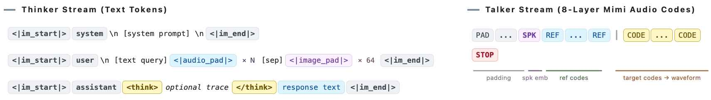

基础知识
MiniMind-O 之所以适合学习，是因为它把语言、语音、图像、音色和实时交互都压进了一个足够小的代码对象。先把术语捋顺，后面读源码会轻很多。
Omni 到底是什么
在这个项目里，Omni 指一个模型系统同时处理文本、语音和图像输入，并输出文本和流式语音。它不是把语音识别、语言模型、语音合成三个独立服务简单串起来，而是让语音特征、图像特征和文本 token 进入同一条建模链路。
| 路线 | 输入处理 | 优点 | 代价 |
|---|---|---|---|
| 级联系统 | 语音先转文字，再由 LLM 生成文字，最后 TTS 合成语音。 | 工程清晰，组件容易替换。 | 转写会丢掉语气、停顿、音色等信息，延迟也更高。 |
| MiniMind-O | 语音和图像经 encoder/projector 注入语言隐空间，Talker 从 Thinker 中间表征生成音频 codes。 | 更接近端到端，能学习语义到语音的统一条件。 | 训练数据、序列格式和解码调度更复杂。 |
语言模型底座
MiniMind-O 继承 MiniMind 的 Transformer 主干。你需要知道四个基础件：
Tokenizer
把文本切成 token id。仓库里的 `model/tokenizer.json` 和 `model/tokenizer_config.json` 决定特殊 token、chat template 和词表。
Transformer Block
由注意力、前馈层、RMSNorm、RoPE 等组成。代码入口在 `model/model_minimind.py`。
Next Token Prediction
Thinker 仍然预测下一个文本 token，训练时只对 assistant 回复区间计算文本 loss。
MoE 变体
`use_moe=1` 会启用稀疏专家结构，发布模型包括 dense 和 MoE 两条线。
语音基础
MiniMind-O 的音频链路由三类概念组成：输入理解、输出编码、实时交互。
SenseVoice-Small
冻结的语音 encoder，把 16 kHz 输入语音变成隐藏特征，再由 `MMAudioProjector` 映射到语言隐空间。
Mimi Codec
冻结的音频编解码器。Talker 不直接生成波形，而是生成 8 层 Mimi codebook 序列，再解码为 24 kHz 音频。
VAD
Voice Activity Detection。仓库用 Silero VAD 判断用户开始/结束说话，并支持生成时打断。
图像基础
视觉侧使用 SigLIP2 作为冻结 encoder。图像统一处理为 256×256，编码成 64 个 patch token 的视觉表征，再由 MMVisionProjector 映射到 Thinker 隐空间。训练数据里 <image> 会被替换成连续的 <|image_pad|> 占位符，模型在这些位置接收真实视觉特征。

训练术语
| 术语 | 在项目里的含义 | 代码线索 |
|---|---|---|
| SFT | 监督微调。用对话、音频 codes、图像字段把模型调成可交互形态。 | `trainer/train_sft_omni.py` |
| T2A | Text-to-Audio，文本输入，输出文本和语音。 | `sft_t2a*.parquet` |
| A2A | Audio-to-Audio，语音输入，输出文本和语音。 | `question_audios` / `answer_audios` |
| I2T/I2A | 图像输入，Thinker 生成文本，Talker 可继续渲染语音。 | image_bytes / <image> |
| MTP | Multi-Token Prediction。Talker 同步预测多层 audio codebook。 | `TalkerHead` 8 个输出头 |
| Bridge Layer | Thinker 中间层传给 Talker 的语义条件，默认 `num_hidden_layers // 2 - 1`。 | `OmniConfig.bridge_layer` |